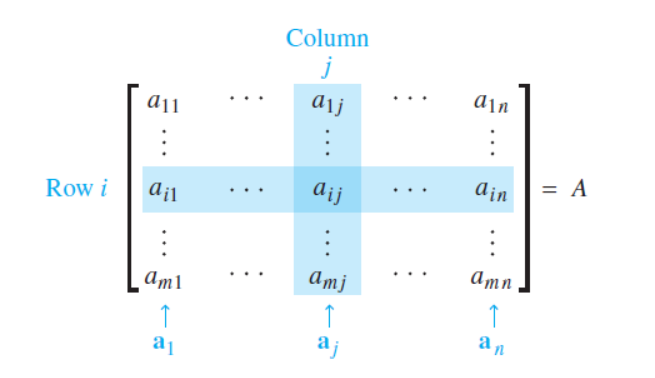

若\$A\$是\$m \times n\$矩阵, 即有\$m\$行\$n\$列的矩阵,
\$A\$的第\$i\$行第\$j\$列的元素用\$a_{ij}\$表示称\$A\$的\$(i, j)\$元素,
\$A\$的各列是\$\mathbb{R}^m\$的向量用(黑体字母) \$\boldsymbol{a}_1, \cdots, \boldsymbol{a}_n\$表示.
当我们特别注意\$A\$的各列时, 我们写成 \$ A =
\begin{bmatrix}
\boldsymbol{a}_1 \;\; \boldsymbol{a}_2 \; \cdots \; \boldsymbol{a}_n
\end{bmatrix} \$,
注意\$a_{ij}\$是第\$j\$个列向量\$\boldsymbol{a}_j\$(从上面算起)的第\$i\$个元素.

\$A=\begin{bmatrix}a_{ij}\end{bmatrix}\$的对角线元素是 \$a_{11}, a_{22}, a_{33}, \cdots\$, 它们组成\$A\$的主对角线.
对角矩阵是一个方阵, 它的非对角线元素全是\$0\$.
元素全是0的\$m \times n\$矩阵称为零矩阵, 用\$O\$表示.
\$O\$的维数通常可由上下文知道, 否则我们就用\$O_{m \times n}\$表示.
我们称两个矩阵相等, 若它们有相同的维数(即有相同行数和列数), 而且对应元素相等.
若\$A\$与\$B\$都是\$m \times n\$矩阵, 则和\$A+B\$也是\$m \times n\$矩阵, 它的各列是\$A\$与\$B\$对应列之和,
因列的向量加法是对应元素相加, \$A+B\$的每个元素也就是\$A\$与\$B\$的对应元素相加.
仅当\$A\$与\$B\$有相同维数, \$A+B\$才有定义.
若\$r\$是标量而\$A\$是矩阵, 则标量乘法\$rA\$是一个矩阵, 它的每一列是\$A\$的对应列的\$r\$倍. 与向量相同, 定义\$-A\$为\$(-1)A\$而\$A-B\$为\$A+(-1)B\$.
设\$A, B, C\$是相同维数的矩阵, \$O\$为相同维数的零矩阵, \$r\$与\$s\$为数, 则有 $$ \begin{align} a.\quad & A + B = B + A \\ b.\quad & (A+B)+C = A+(B+C) \\ c.\quad & A + O = A \\ d.\quad & r(A+B) = rA+rB \\ e.\quad & (r+s)A = rA+sA \\ f.\quad & r(sA) = (rs)A \end{align} $$
若\$A\$是\$m \times n\$矩阵, \$B\$是\$n \times p\$矩阵, \$B\$的列是\$ \boldsymbol{b}_1, \cdots, \boldsymbol{b}_p \$, 则乘积\$AB\$是\$m \times p\$矩阵, 它的各列是\$ A\boldsymbol{b}_1, \cdots, A\boldsymbol{b}_p \$, 即 $$ AB = A \begin{bmatrix} \boldsymbol{b}_1 & \boldsymbol{b}_2 & \cdots & \boldsymbol{b}_p \\ \end{bmatrix} = \begin{bmatrix} A\boldsymbol{b}_1 & A\boldsymbol{b}_2 & \cdots & A\boldsymbol{b}_p \\ \end{bmatrix} $$
\$AB\$的每一列都是\$A\$的各列的线性组合, 以\$B\$的对应列的元素为权.
若乘积\$AB\$有定义, \$AB\$的第\$i\$行第\$j\$列的元素是\$A\$的第\$i\$行与\$B\$的第\$j\$列 对应元素乘积之和. 若\$(AB)_{ij}\$表示\$AB\$的\$(i,j)\$元素, \$A\$为\$m \times n\$矩阵, \$B\$为\$n \times p\$矩阵, 则\$AB\$为\$m \times p\$矩阵, 且 $$ \begin{equation} \begin{split} (AB)_{ij} & = a_{i1}b_{1j} + a_{i2}b_{2j} + \cdots + a_{in}b_{nj} \\ & = \sum_{k=1}^n a_{ik}b_{kj} \\ & = row(A)_i \boldsymbol{b}_j \end{split} \end{equation} $$ 其中\$row(A)_i\$表示矩阵\$A\$的第\$i\$行的行向量, \$\boldsymbol{b}_j\$表示矩阵\$B\$的 第\$j\$列的列向量, \$row(A)_i \boldsymbol{b}_j\$表示向量\$row(A)_i\$和向量\$\boldsymbol{b}_j\$ 的内积.
设\$A\$为\$m \times n\$矩阵, \$B\$, \$C\$的维数使下列各式的乘积有定义 $$ \begin{align} a.\quad & A(BC) = (AB)C & (乘法结合律) \\ b.\quad & A(B+C) = AB+AC & (乘法左分配律) \\ c.\quad & (B+C)A = BA+CA & (乘法右分配律) \\ d.\quad & r(AB) = (rA)B = A(rB), \quad r为任意数 \\ e.\quad & I_{m}A = A = AI_{n} & (矩阵乘法的恒等式) \end{align} $$ 其中\$I_{m}\$表示\$ m \times m \$单位矩阵, 对\$\mathbb{R}^m\$中的一切\$\boldsymbol{x}\$, \$I_{m}\boldsymbol{x} = \boldsymbol{x} \$.
若\$A\$为\$n \times n\$矩阵, \$k\$是正整数, 则\$A^k\$表示\$k\$个\$A\$的乘积. $$ \begin{matrix} A^k & = & \underbrace{ A \cdots A } \\ & & k \end{matrix} $$ 若\$A\$不是零矩阵, 且\$x\$属于\$\mathbb{R}^n\$, 则\$A^{k}\boldsymbol{x}\$ 表示\$\boldsymbol{x}\$被\$A\$连续左乘\$k\$次. 若\$k=0\$, 则\$A^{0}\boldsymbol{x}\$就是\$\boldsymbol{x}\$本身. 因此\$A^0\$被解释为单位矩阵.
给定\$m \times n\$矩阵\$A\$, 则\$A\$的转置是一个\$n \times m\$矩阵, 用\$A^T\$表示, 它的列是由\$A\$的对应行构成的.
设\$A\$与\$B\$表示矩阵, 其维数使下列和与积有定义, 则 $$ \begin{align} a.\quad & (A^T)^T = A \\ b.\quad & (A+B)^T = A^T + B^T \\ c.\quad & 对任意数r, \quad (rA)^T = rA^T \\ d.\quad & (AB)^T = B^T A^T \end{align} $$ 若干个矩阵的乘积的转置等于它们的转置的乘积, 但是相乘的顺序相反.
若我们要引用矩阵, 而不是写出矩阵的所有元素, 则可以使用大写字母\$ A, B, C \$等表示矩阵. 一般地, \$a_{ij}\$表示矩阵\$A\$的第\$i\$行第\$j\$列的元素, 并用\$(i, j)\$表示它. 因此, 若\$A\$为一个\$m \times n\$的矩阵,则 $$ A = \begin{bmatrix} a_{11} & a_{12} & \cdots & a_{1n} \\ a_{21} & a_{22} & \cdots & a_{2n} \\ \vdots & & & \\ a_{m1} & a_{m2} & \cdots & a_{mn} \end{bmatrix} $$ 有时还将矩阵简记为\$A=(a_{ij})\$. 类似的, 矩阵\$B\$可以表示为\$(b_{ij})\$, 矩阵\$C\$可以表示为\$(c_{ij})\$等.
若两个\$m \times n\$矩阵\$A\$和\$B\$对任一\$i\$和\$j\$均满足\$a_{ij}=b_{ij}\$, 则称它们相等(equal).
设\$A\$为\$m \times n\$的矩阵, 且\$\alpha\$为一标量, 则\$\alpha A\$为一\$m \times n\$的矩阵, 其中 \$(i,j)\$为\$\alpha a_{ij}\$.
一个\$m \times n\$矩阵\$A\$的转置(transpose)为\$n \times m\$矩阵\$B\$, 定义为 $$ b_{ji} = a_{ij} $$ 其中\$j = 1, \cdots, n\$和\$i = 1, \cdots, m\$. \$A\$的转置记为\$A^T\$.
一个\$n \times n\$的矩阵\$A\$, 若满足\$A^T=A\$, 则称为对称的(symmetric).
\$n \times n\$的单位矩阵(identity matrix)为矩阵\$I = (\delta_{ij})\$, 其中 $$ (\delta_{ij}) = \begin{cases} 1 & 当i = j \\ 0 & 当i \neq j \end{cases} \\ $$
\$n \times n\$单位矩阵\$I\$的列向量为用于定义\$n\$维欧几里得坐标空间的标准向量. \$I\$的第\$j\$列向量的标准记号为\$\boldsymbol{e}_j\$, 而不是通常的\$\boldsymbol{i}_j\$. 因此, \$n \times n\$单位矩阵可写为 $$ I = \begin{bmatrix} \boldsymbol{e}_1 & \boldsymbol{e}_2 & \cdots & \boldsymbol{e}_n \end{bmatrix} $$
设\$C=AB\$, \$D=C^T\$, \$E= B^T A^T\$, 只需证明\$(D)_{ij}\$等于\$(E)_{ij}\$.
因为:
$$
\begin{equation}
\begin{split}
(C)_{ij} & = (AB)_{ij} \\
& = row(A)_i \boldsymbol{b}_j
\end{split}
\end{equation}
$$
所以:
$$
\begin{equation}
\begin{split}
(D)_{ij} & = (C)_{ji} \\
& = row(A)_j \boldsymbol{b}_i
\end{split}
\end{equation}
$$
又因为
$$
\begin{equation}
\begin{split}
(E)_{ij} & = (B^T A^T)_{ij} \\
& = row(B^T)_i col(A^T)_j \\
& = (\boldsymbol{b}_i)^T (row(A)_j)^T \\
& = row(A)_j \boldsymbol{b}_i \\
\end{split}
\end{equation}
$$
所以
$$
(D)_{ij} = (E)_{ij}
$$
所以
$$
(AB)^T = B^T A^T
$$